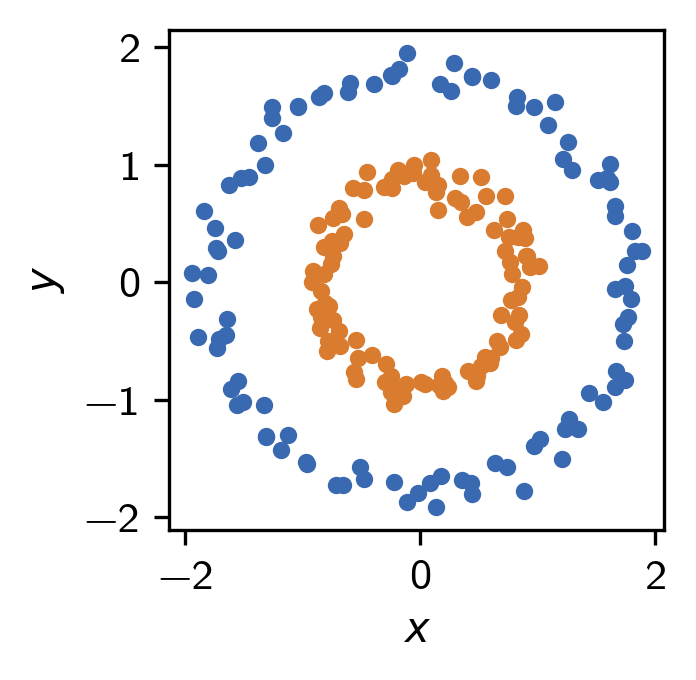
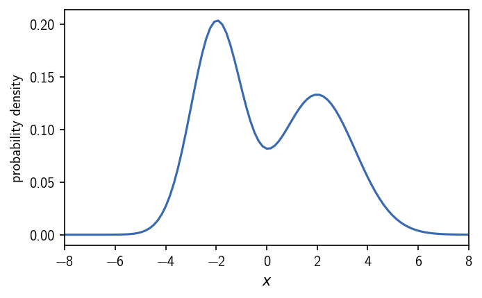
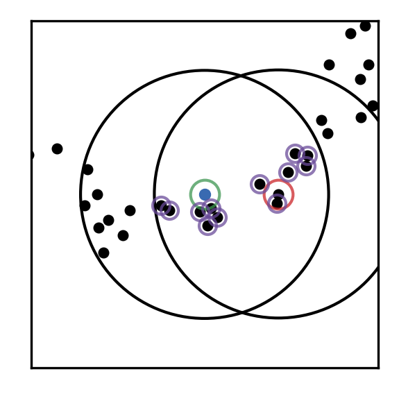
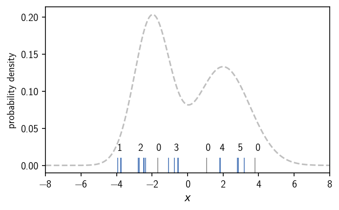
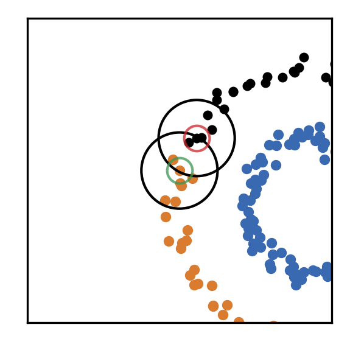

Test for the cnn module¶
Source: https://scikit-learn.org/stable/auto_examples/cluster/plot_cluster_comparison.html
The test consists of six model data sets.
First import the module.
[1]:
import core.cnn as cnn
/home/janjoswig/.virtualenvs/CNN-5gkgQAOT/lib/python3.7/site-packages/pandas/compat/__init__.py:84: UserWarning: Could not import the lzma module. Your installed Python is incomplete. Attempting to use lzma compression will result in a RuntimeError.
warnings.warn(msg)
[17]:
importlib.reload(cnn)
[17]:
<module 'core.cnn' from '/home/janjoswig/CNN/core/cnn.py'>
Other import:
[11]:
import importlib
import warnings
import numpy as np
import matplotlib.pyplot as plt
from sklearn import datasets
from sklearn.preprocessing import StandardScaler
from pathlib import Path
from itertools import cycle, islice
[3]:
from matplotlib import cm
from pylab import rcParams
rcParams['figure.figsize'] = 6.50128*0.5, 6.50128*0.5*0.618*1.1
dpi = 300
rcParams['figure.dpi'] = dpi
rcParams['font.family'] = 'sans-serif'
rcParams['font.sans-serif'] = 'Latin Modern Sans'
Set how many data points should be generated and a random seed.
[18]:
noisy_circles, _ = datasets.make_circles(
n_samples=200,
factor=.5,
noise=.05,
random_state=8
)
noisy_circles = StandardScaler().fit_transform(noisy_circles)
params = {
'radius_cutoff': 0.4,
'cnn_cutoff': 0,
'member_cutoff': 1,
'max_clusters': None
}
cobj = cnn.CNN(train=noisy_circles)
cobj.fit(
radius_cutoff=params['radius_cutoff'],
cnn_cutoff=params['cnn_cutoff'],
member_cutoff=params['member_cutoff'],
max_clusters=params['max_clusters']
)
color = ['#000000', '#396ab1', '#da7c30',
'#3e9651', '#cc2529', '#535154',
'#6b4c9a', '#922428', '#948b3d']
colors = np.array(
list(islice(cycle(
color
), int(max(cobj.train_labels) + 1)
))
)
Configuration file found in /home/janjoswig
Calculating nxn distance matrix for 200 points
Execution time for call of fit(): 0 hours, 0 minutes, 0.0073 seconds
recording: ...
points 200
radius_cutoff 0.4
cnn_cutoff 0
member_cutoff 1
max_clusters None
n_clusters 2
largest 0.5
noise 0
time 0.00733256
dtype: object
[19]:
fig, ax = plt.subplots()
cobj.evaluate(ax=ax, annotate=False, plot="scatter", ax_props={"aspect": "equal"}, original=True)
fig.savefig(figdir / "circles.png")

[12]:
figdir = Path("/home/janjoswig/Documents/Presentation/cnn/figures")
[14]:
fig, ax = plt.subplots()
cobj.evaluate(ax=ax, annotate=False, plot="scatter", ax_props={"aspect": "equal"})
fig.savefig(figdir / "circles_clustered.png")

[316]:
cobj.evaluate(plot='contourf', contour_props={'cmap': cm.inferno})

And take a look at the sets:
[20]:
fig, ax = plt.subplots(1, 2)
Ax = ax.flatten()
Ax[0].plot(
noisy_circles[:, 0],
noisy_circles[:, 1],
'k.')
Ax[0].set(**{
"xticks": (),
"yticks": (),
"xlim": (-2.5, 2.5),
"ylim": (-2.5, 2.5),
"aspect": 'equal',
})
Ax[0].set_title("original", fontsize=10, pad=3)
Ax[1].scatter(
noisy_circles[:, 0],
noisy_circles[:, 1],
s=10,
color=colors[cobj.train_labels]
)
Ax[1].set(**{
"xticks": (),
"yticks": (),
"xlim": (-2.5, 2.5),
"ylim": (-2.5, 2.5),
"aspect": 'equal',
})
Ax[1].set_title("clustered", fontsize=10, pad=3)
fig.savefig(figdir / "circles_example.png")

Next we specify the cluster parameters used for each set.
[25]:
def plt_iteration(p, q=None, nn=None, cnn=None,
cdict=None, r=0.5,
data=noisy_circles, save=False,
o='iteration', limitf=1.4, **kwargs):
fig, ax = plt.subplots()
ax.scatter(
data[:, 0], data[:, 1],
s=8,
color='black'
)
pcircle = plt.Circle(
(data[p, 0], data[p, 1]),
r,
edgecolor='k',
facecolor='none'
)
qcircle = plt.Circle(
(data[q, 0], data[q, 1]),
r,
edgecolor='k',
facecolor='none',
)
ax.plot(
data[p, 0], data[p, 1],
'.',
markeredgecolor=color[3],
markerfacecolor='none',
alpha=0.75,
ms=20
)
ax.add_artist(pcircle)
if q is not None:
ax.plot(
data[q, 0], data[q, 1],
'.',
markeredgecolor=color[4],
markerfacecolor='none',
alpha=0.75,
ms=20
)
ax.add_artist(qcircle)
if nn is not None:
ax.plot(
data[nn, 0], data[nn, 1],
'.',
markeredgecolor=color[5],
markerfacecolor='none',
alpha=0.75,
ms=14
)
if cnn is not None:
ax.plot(
data[cnn, 0], data[cnn, 1],
'.',
markeredgecolor=color[6],
markerfacecolor='none',
alpha=0.75,
ms=12
)
if cdict is not None:
for label, cluster in cdict.items():
ax.scatter(
data[cluster, 0],
data[cluster, 1],
s=10,
color=color[label],
)
ax.set(**{
"aspect": 'equal',
"xlim": (data[p, 0]-limitf*r, data[p, 0]+limitf*r),
"ylim": (data[p, 1]-limitf*r, data[p, 1]+limitf*r),
"xticks": (),
"yticks": (),
})
if save:
fig.savefig(figdir / f"{o}", dpi=dpi)
1¶
[28]:
plt_iteration(173, save=True, o="initial")
[29]:
plt_iteration(173, cdict={1: [173]}, save=True, o="initial_assigned")

2¶
[30]:
plt_iteration(173, 8, cdict={1: [173]}, save=True, o="candidate")

[31]:
plt_iteration(
173, 8,
cnn=[98, 100, 69, 168, 27, 113, 115, 85, 26, 187, 60, 63,],
cdict={1: [173]},
save=True,
o="candidate_neighbours"
)

[32]:
plt_iteration(
173, 8,
cnn=[98, 100, 69, 168, 27, 113, 115, 85, 26, 187, 60, 63,],
cdict={1: [173, 8]},
save=True, o="candidate_assigned"
)

[33]:
plt_iteration(
173, 187,
cdict={1: [8, 10, 26, 27, 30, 32, 50, 60, 63, 69, 85, 98, 100, 113, 115, 128, 135, 163, 164, 168, 173, 187]},
save=True, o="further_assigned"
)

[34]:
plt_iteration(
10, 3,
cdict={1: [8, 10, 26, 27, 30, 32, 50, 60, 63, 69, 85, 98, 100, 113, 115, 128, 135, 163, 164, 168, 173, 187]},
save=True, o="grow_candidate"
)

[35]:
plt_iteration(
10, 108,
cdict={1: [3, 8, 10, 26, 27, 30, 32, 50, 60, 63, 69, 85, 98, 100, 113, 115, 128, 135, 163, 164, 168, 173, 187]},
save=True, o="grow_candidate_assigned"
)

[36]:
plt_iteration(
27, 2,
cdict={1: [3, 8, 10, 26, 27, 30, 32, 50, 60, 63, 69, 85, 98, 100, 113, 115, 128, 135, 163, 164, 168, 173, 187]},
save=True, o="grow_further"
)

[37]:
plt_iteration(
195, 180,
cdict={1: [2, 3, 6, 7, 8, 9, 10, 11, 12, 13, 14, 17, 19, 21, 23, 24, 25, 26, 27, 28, 30, 32, 34, 39, 42, 43, 44, 46, 47, 50, 56, 57, 59, 60, 61, 63, 64, 66, 69, 70, 71, 72, 79, 82, 85, 88, 91, 95, 96, 98, 100, 103, 107, 108, 110, 113, 115, 116, 117, 118, 119, 121, 122, 124, 126, 127, 128, 130, 134, 135, 137, 140, 142, 143, 144, 145, 148, 150, 160, 162, 163, 164, 166, 167, 168, 173, 174, 180, 182, 184, 185, 186, 187, 190, 192, 193, 195, 196, 197, 199]},
limitf=4,
save=True, o="cluster1_done"
)

[38]:
plt_iteration(
4, 0,
cdict={
1: [2, 3, 6, 7, 8, 9, 10, 11, 12, 13, 14, 17, 19, 21, 23, 24, 25, 26, 27, 28, 30, 32, 34, 39, 42, 43, 44, 46, 47, 50, 56, 57, 59, 60, 61, 63, 64, 66, 69, 70, 71, 72, 79, 82, 85, 88, 91, 95, 96, 98, 100, 103, 107, 108, 110, 113, 115, 116, 117, 118, 119, 121, 122, 124, 126, 127, 128, 130, 134, 135, 137, 140, 142, 143, 144, 145, 148, 150, 160, 162, 163, 164, 166, 167, 168, 173, 174, 180, 182, 184, 185, 186, 187, 190, 192, 193, 195, 196, 197, 199],
2: [4]
},
limitf=2,
save=True, o="init_cluster2"
)

[39]:
plt_iteration(
29, 20,
cdict={
1: [2, 3, 6, 7, 8, 9, 10, 11, 12, 13, 14, 17, 19, 21, 23, 24, 25, 26, 27, 28, 30, 32, 34, 39, 42, 43, 44, 46, 47, 50, 56, 57, 59, 60, 61, 63, 64, 66, 69, 70, 71, 72, 79, 82, 85, 88, 91, 95, 96, 98, 100, 103, 107, 108, 110, 113, 115, 116, 117, 118, 119, 121, 122, 124, 126, 127, 128, 130, 134, 135, 137, 140, 142, 143, 144, 145, 148, 150, 160, 162, 163, 164, 166, 167, 168, 173, 174, 180, 182, 184, 185, 186, 187, 190, 192, 193, 195, 196, 197, 199],
2: [0, 1, 4, 29, 35, 37, 49, 54, 68, 75, 78, 83, 84, 94, 101, 120, 132, 136, 138, 149, 151, 157, 165, 169, 170, 171, 177, 181, 188, 191,]
},
limitf=4,
save=True, o="grow_cluster2"
)

[ ]: